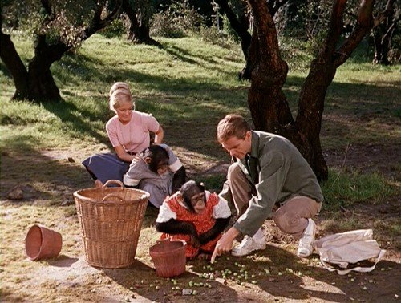
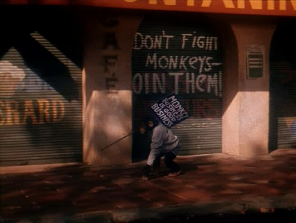

Today, I would like to discuss one of the true classics of the Disney live action canon: Monkeys, Go Home! This 1967 film has it all… monkeys* — four of them, and they’re <dramatic echo>SPACE MONKEYS</dramatic echo> … Dean Jones … ’60s protests … Love, Frenchy Style … and as if that weren’t enough (no, stop! no, really!) … Maurice! Chevalier! And! The! Title! Ends! In! An! Exclamation! Point! Can you feel the hilarity?! So zany!!!
*phew* … I’ll take it down a notch or two now, before someone reaches through the screen to throttle me.

Dean Jones puts his chimps to work, in Disney’s "Monkeys Go Home!"
Alright now, where was I? Oh yes. Monkeys, Go Home. I mean, Monkeys, Go Home!. In this delightful, fun for the whole family maybe some of the family film, Dean Jones plays Henry Dussard, an American who has just inherited an olive farm he has never seen, in the south of France. Ooh la la! Being an American, he’s got some nutty ideas about how to turn this olive farm into a profitable venture — by hiring chimps instead of people to work the farm. Luckily, he previously was a chimp trainer for NASA, so he’s got a team of recently-retired space chimps at his disposal. So wacky!

In the ’60s, even the chimps were protesting
The little French town doesn’t like the idea of having to compete against a chimp-run farm, and they mount an underground resistance against Dussard. The chimps strike back by mounting a protest of their own, fighting for their right to work just as humans do. At the same time, a boozy French broad shows up claiming to be Dussard’s long-lost cousin (and she is truly fabulous, played by Yvonne Constant), staking claim to half of Dussard’s farm, and threatening Dussard’s budding relationship with a barely-legal French tartlet, played by Yvette Mimieux.
Maurice Chevalier, with the French corner of It’s a Small World
And just for good measure, Maurice Chevalier plays the town priest, who shows up now and then to impart some heavily-accented wisdom, and sing a song or two.
This is quite possibly the slapstickiest, monkeyest, wacknuttiest of all the Disney films. The hilarity, it ensues. This film… well, it’s sort of the Disney version of the Star Wars Holiday Special. I can’t help but wonder why they’ve released it on DVD, but I’m so glad they did. I kind of love it.
Oh! The music! The music is the best part, and I’m not kidding around here — I would sincerely buy Robert F. Brunner’s soundtrack/score. It’s great ’60s light-quirk-funk-pop stuff.
* Technically, chimps aren’t monkeys, but for the sake of simplicity, today we’ll say they are. It’s Topsy-Turvy day! Shrimp are fish! Tomatoes are vegetables! Mama’s Family was funny!